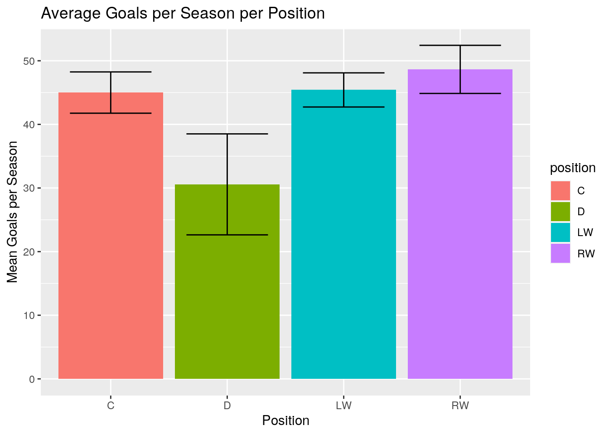
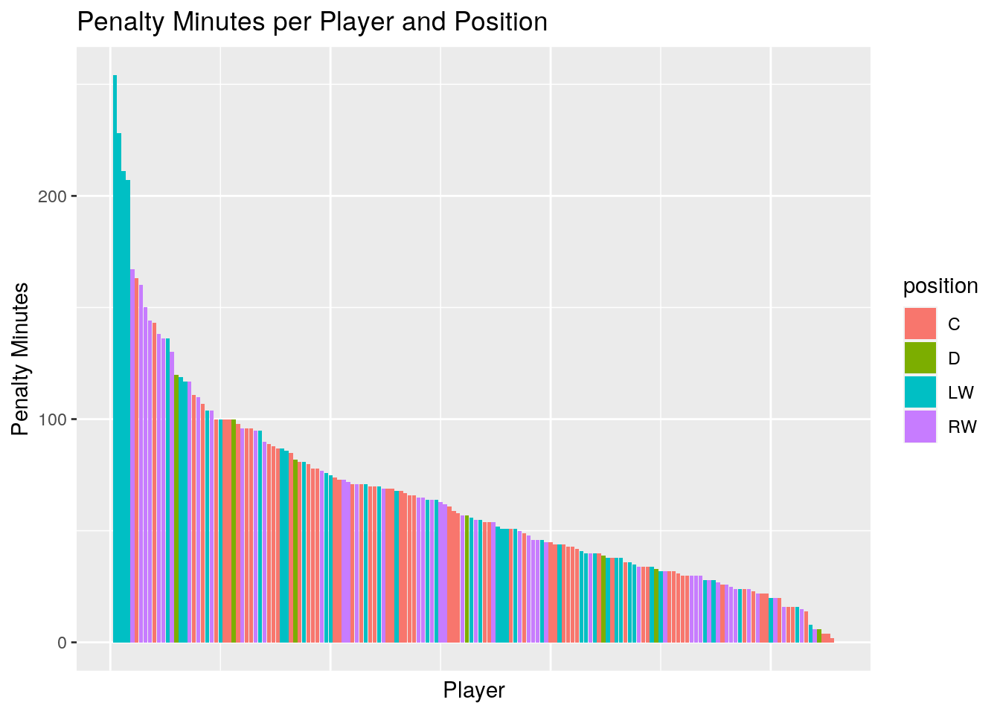
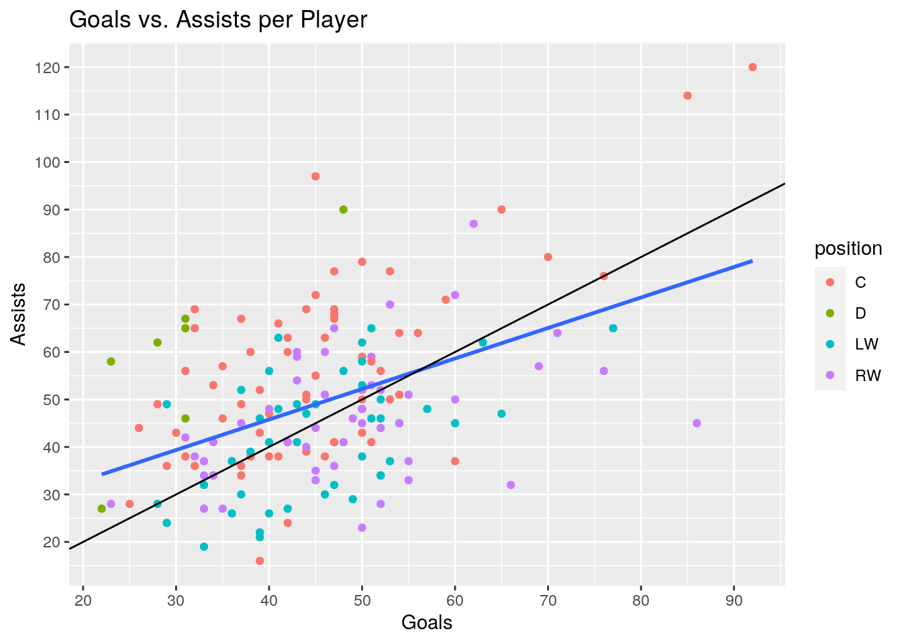
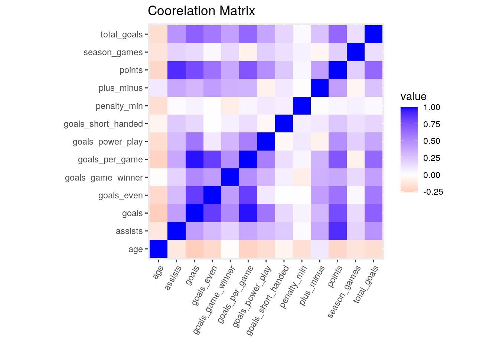
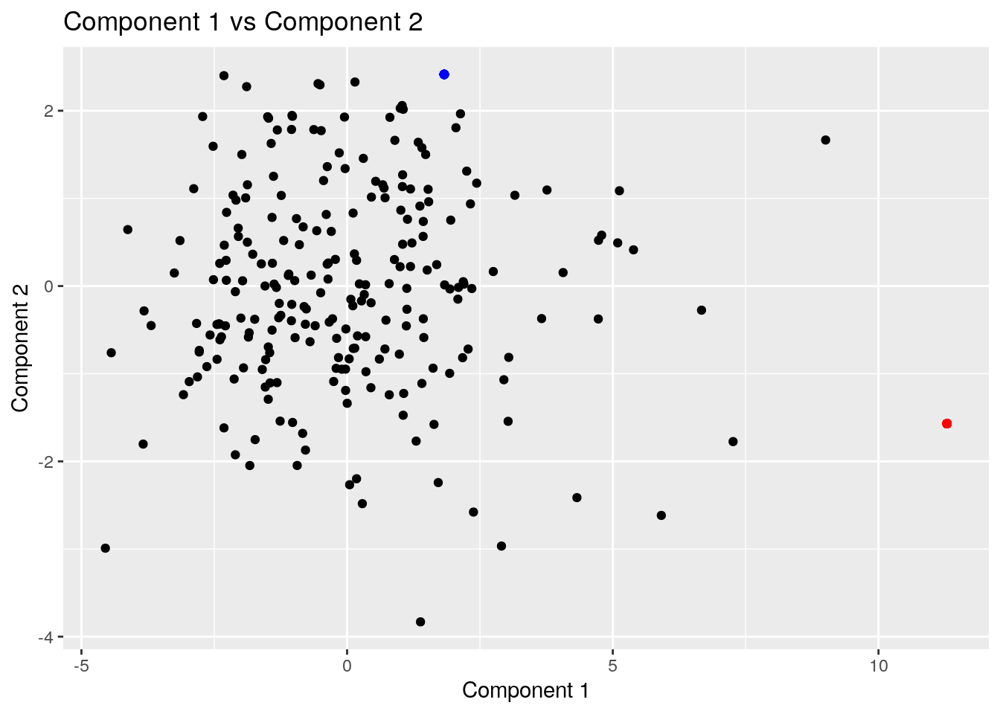
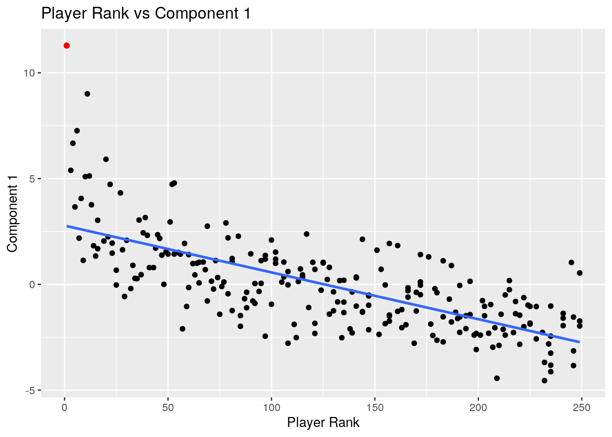
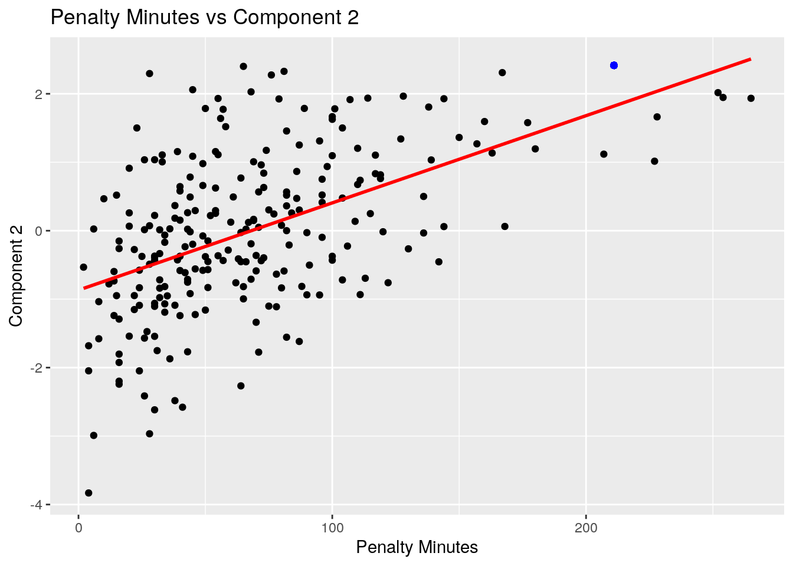

library(tidyverse)
top_250 <- readr::read_csv("https://raw.githubusercontent.com/rfordatascience/tidytuesday/master/data/2020/2020-03-03/top_250.csv")
season_goals <- readr::read_csv("https://raw.githubusercontent.com/rfordatascience/tidytuesday/master/data/2020/2020-03-03/season_goals.csv")
top_players <- top_250 %>% select(-url_number, -raw_link,
-link) %>% mutate(yr_start = as.character(yr_start))
for (i in 1:6) {
top_players <- top_players %>% mutate(raw_rank = case_when(is.na(raw_rank) ~
lag(raw_rank), !is.na(raw_rank) ~ raw_rank))
}
glimpse(top_players)## Rows: 251
## Columns: 6
## $ raw_rank <dbl> 1, 2, 3, 4, 5, 6, 7, 8, 9, 10, 11, 12, 13, 14, 15, 16, 16…
## $ player <chr> "Wayne Gretzky", "Gordie Howe", "Jaromir Jagr", "Brett Hu…
## $ years <chr> "1979-99", "1946-80", "1990-18", "1986-06", "1971-89", "1…
## $ total_goals <dbl> 894, 801, 766, 741, 731, 717, 708, 700, 694, 692, 690, 68…
## $ active <chr> "Retired", "Retired", "Retired", "Retired", "Retired", "R…
## $ yr_start <chr> "1979", "1946", "1990", "1986", "1971", "1963", "1979", "…best_season <- season_goals %>% group_by(player) %>%
filter(goals == max(goals)) %>% select(-rank, -years,
-total_goals, -status, -yr_start, -league, -headshot) %>%
distinct(player, .keep_all = TRUE)
glimpse(best_season)## Rows: 251
## Columns: 16
## Groups: player [251]
## $ position <chr> "C", "RW", "RW", "RW", "C", "C", "RW", "LW", "LW",…
## $ hand <chr> "Left", "Right", "Left", "Right", "Right", "Left",…
## $ player <chr> "Wayne Gretzky", "Gordie Howe", "Jaromir Jagr", "B…
## $ season <chr> "1981-82", "1952-53", "1995-96", "1990-91", "1978-…
## $ age <dbl> 21, 24, 23, 26, 27, 28, 25, 22, 21, 23, 23, 22, 26…
## $ team <chr> "EDM", "DET", "PIT", "STL", "LAK", "BOS", "WSH", "…
## $ season_games <dbl> 80, 70, 82, 78, 80, 78, 80, 82, 78, 80, 76, 84, 84…
## $ goals <dbl> 92, 49, 62, 86, 59, 76, 50, 65, 50, 65, 85, 76, 63…
## $ assists <dbl> 120, 46, 87, 45, 71, 76, 52, 47, 38, 90, 114, 56, …
## $ points <dbl> 212, 95, 149, 131, 130, 152, 102, 112, 88, 155, 19…
## $ plus_minus <dbl> 80, NA, 31, 23, 22, 69, 16, 28, 20, 17, 41, 8, 18,…
## $ penalty_min <dbl> 26, 57, 96, 22, 30, 71, 71, 40, 119, 61, 100, 45, …
## $ goals_even <dbl> 68, 37, 41, 57, 40, 51, 33, 43, 40, 45, 41, 52, 37…
## $ goals_power_play <dbl> 18, 11, 20, 29, 19, 24, 17, 22, 10, 17, 31, 24, 24…
## $ goals_short_handed <dbl> 6, 1, 1, 0, 0, 1, 0, 0, 0, 3, 13, 0, 2, 7, 0, 1, 3…
## $ goals_game_winner <dbl> 12, 6, 12, 11, 7, 16, 11, 11, 3, 7, 8, 7, 8, 8, 4,…hockey <- top_players %>% full_join(best_season, by = "player")
glimpse(hockey)## Rows: 251
## Columns: 21
## $ raw_rank <dbl> 1, 2, 3, 4, 5, 6, 7, 8, 9, 10, 11, 12, 13, 14, 15,…
## $ player <chr> "Wayne Gretzky", "Gordie Howe", "Jaromir Jagr", "B…
## $ years <chr> "1979-99", "1946-80", "1990-18", "1986-06", "1971-…
## $ total_goals <dbl> 894, 801, 766, 741, 731, 717, 708, 700, 694, 692, …
## $ active <chr> "Retired", "Retired", "Retired", "Retired", "Retir…
## $ yr_start <chr> "1979", "1946", "1990", "1986", "1971", "1963", "1…
## $ position <chr> "C", "RW", "RW", "RW", "C", "C", "RW", "LW", "LW",…
## $ hand <chr> "Left", "Right", "Left", "Right", "Right", "Left",…
## $ season <chr> "1981-82", "1952-53", "1995-96", "1990-91", "1978-…
## $ age <dbl> 21, 24, 23, 26, 27, 28, 25, 22, 21, 23, 23, 22, 26…
## $ team <chr> "EDM", "DET", "PIT", "STL", "LAK", "BOS", "WSH", "…
## $ season_games <dbl> 80, 70, 82, 78, 80, 78, 80, 82, 78, 80, 76, 84, 84…
## $ goals <dbl> 92, 49, 62, 86, 59, 76, 50, 65, 50, 65, 85, 76, 63…
## $ assists <dbl> 120, 46, 87, 45, 71, 76, 52, 47, 38, 90, 114, 56, …
## $ points <dbl> 212, 95, 149, 131, 130, 152, 102, 112, 88, 155, 19…
## $ plus_minus <dbl> 80, NA, 31, 23, 22, 69, 16, 28, 20, 17, 41, 8, 18,…
## $ penalty_min <dbl> 26, 57, 96, 22, 30, 71, 71, 40, 119, 61, 100, 45, …
## $ goals_even <dbl> 68, 37, 41, 57, 40, 51, 33, 43, 40, 45, 41, 52, 37…
## $ goals_power_play <dbl> 18, 11, 20, 29, 19, 24, 17, 22, 10, 17, 31, 24, 24…
## $ goals_short_handed <dbl> 6, 1, 1, 0, 0, 1, 0, 0, 0, 3, 13, 0, 2, 7, 0, 1, 3…
## $ goals_game_winner <dbl> 12, 6, 12, 11, 7, 16, 11, 11, 3, 7, 8, 7, 8, 8, 4,…# Mutate to add average goals per game in the
# season
hockey <- hockey %>% mutate(goals_per_game = goals/season_games)
# How many top players per team and then position
# and hand This finally gives me evidence that the
# Boston Bruins are in fact the best team in the
# league
hockey %>% filter(!is.na(team)) %>% group_by(team) %>%
count %>% arrange(-n) %>% head(6)## # A tibble: 6 x 2
## # Groups: team [6]
## team n
## <chr> <int>
## 1 BOS 15
## 2 PHI 15
## 3 TOR 14
## 4 DET 13
## 5 MTL 13
## 6 PIT 13hockey %>% filter(!is.na(position)) %>% group_by(position,
hand) %>% count %>% pivot_wider(names_from = hand,
values_from = n)## # A tibble: 4 x 3
## # Groups: position [4]
## position Left Right
## <chr> <int> <int>
## 1 C 41 24
## 2 D 5 2
## 3 LW 37 7
## 4 RW 12 36# Summary stats for top season performance
hockey %>% select(goals, assists, points, goals_per_game,
age) %>% rename(`goals-per-game` = "goals_per_game") %>%
summarize_all(c(mean = mean, sd = sd, min = min,
median = median, max = max)) %>% pivot_longer(1:25) %>%
separate(name, into = c("variable", "stat"), sep = "_") %>%
pivot_wider(names_from = stat, values_from = value)## # A tibble: 5 x 6
## variable mean sd min median max
## <chr> <dbl> <dbl> <dbl> <dbl> <dbl>
## 1 goals 44.5 11.3 21 44 92
## 2 assists 46.3 16.1 13 44 120
## 3 points 90.9 23.4 34 89 212
## 4 goals-per-game 0.575 0.148 0.288 0.557 1.15
## 5 age 25.7 3.41 19 25 38# Coorelation matrix of all numeric categories
hockey_cor <- hockey %>% select(is.numeric, -raw_rank) %>%
scale %>% na.omit %>% corThe first table shows some interesting information, namely the fact that of the top six teams by number of top 250 players, five are from the "original six" of the NHL. These were the first six teams to play in the NHL, and as such it makes sense that they would have more players in the top 250, they have simply had more time to accumulate them. Pitsburg is the only team outside of the "original six" in this top six ranking, and the New York Rangers are the only "original six" team missing. The second table shows an interesting correlation between wing position and shooting hand. It appears that the majority of left wingers shoot left handed and visa versa for right wingers. We can also see that left handed shooting is most common in all positions besides right wingers, even defensemen. This association could be explained by the fact that many right handed players will actually shoot left handed. Finally, the second table shows interestingly enough that goals and assists seem to be approximately even per player, and that most players score only once every two games. It is also interesting to see that most players were about 25 when they had their best scoring season, but the oldest was 38 (Ralph Backstrom), a full three and a half standard deviation away from the mean.
hockey %>% group_by(position) %>% na.omit %>% ggplot(aes(position,
goals)) + geom_bar(stat = "summary", fun = mean,
aes(fill = position)) + geom_errorbar(stat = "summary",
fun.data = mean_cl_normal, width = 0.7) + ggtitle("Average Goals per Season per Position") +
ylab("Mean Goals per Season") + xlab("Position") This plot shows the average goals per season per position in the top 250 players. As to be expected defensemen score significantly less on average due to the nature of their position. Across the other three positions there appears to be no significant differences in average scoring per season. Right wingers have a slight edge, but this is most likely due to random error and is accounted for in the 95% confidence interval bars.
hockey %>% arrange(-penalty_min) %>% filter(!is.na(position)) %>%
mutate(penalty_min_rank = row_number()) %>% ggplot(aes(penalty_min_rank,
penalty_min)) + geom_bar(stat = "identity", aes(fill = position)) +
theme(axis.text.x = element_blank(), axis.ticks.x = element_blank()) +
ggtitle("Penalty Minutes per Player and Position") +
ylab("Penalty Minutes") + xlab("Player")
hockey %>% filter(!is.na(position)) %>% filter(penalty_min ==
max(penalty_min) | penalty_min == min(penalty_min)) %>%
select(raw_rank, player, position, team, penalty_min)## # A tibble: 2 x 5
## raw_rank player position team penalty_min
## <dbl> <chr> <chr> <chr> <dbl>
## 1 121 Butch Goring C LAK 2
## 2 203 Brian Sutter LW STL 254This plot shows each player and their amount of minutes in the penalty box across their entire best season. There does not appear to be a strong coorelation between position and more or less time in the box, but it is interesting to see that all of the top players by penalty minutes were left wingers. The player with the most penalty minutes was Brian Sutter of the St. Louis Blues and the player with the least was Butch Goring of the LA Kings.
hockey %>% select(goals, assists, position) %>% na.omit %>%
ggplot(aes(goals, assists)) + geom_point(aes(color = position)) +
geom_smooth(method = "lm", se = F) + ggtitle("Goals vs. Assists per Player") +
xlab("Goals") + ylab("Assists") + scale_y_continuous(breaks = seq(0,
130, 10)) + scale_x_continuous(breaks = seq(0,
100, 10)) + geom_abline()
cor(hockey$goals, hockey$assists)## [1] 0.439445This plot shows each players goals scored in their best season plotted against their assists earned. Different positions are color coded and a blue line of best fit is added. We can see a realatively positive coorelation between the two values, and this makes sense based on the summary statistic previously computed showing close means and standard deviations in the two variables. We do see an interesting trend in that all defensemen score more assists than goals, and this can be seen by all of the green dots falling above the black y=x line.
hockey_cor %>% as.data.frame %>% rownames_to_column %>%
pivot_longer(-1) %>% ggplot(aes(rowname, name,
fill = value)) + geom_tile() + xlab("") + ylab("") +
coord_fixed() + theme(axis.text.x = element_text(angle = 60,
hjust = 1)) + scale_fill_gradient2(low = "red",
mid = "white", high = "blue") + ggtitle("Coorelation Matrix") This plot shows a coorelation matrix of all numeric variables (minus ranking). We can see that most variables are positively associated with the others, with key exceptions being age and penalty minutes. It goes to reason that the more sucessful a player is the better they will score on most metrics, but that as a player ages they will be less athletic and score lower. In a similar vein it goes to reason that players that have higher penalty minutes will have less opportunities to score and contribute assists.
hockey_nums <- hockey %>% select_if(is.numeric) %>%
select(-raw_rank) %>% scale
rownames(hockey_nums) <- hockey$player
hockey_nums <- hockey_nums %>% na.omit
hockey_pca <- princomp(hockey_nums)
summary(hockey_pca, loadings = T)## Importance of components:
## Comp.1 Comp.2 Comp.3 Comp.4 Comp.5
## Standard deviation 2.2321163 1.1722742 1.1195400 1.00991930 0.93052876
## Proportion of Variance 0.4034664 0.1112838 0.1014969 0.08259373 0.07011861
## Cumulative Proportion 0.4034664 0.5147502 0.6162472 0.69884089 0.76895951
## Comp.6 Comp.7 Comp.8 Comp.9 Comp.10
## Standard deviation 0.91200123 0.84968275 0.72830073 0.6468450 0.5903497
## Proportion of Variance 0.06735418 0.05846384 0.04295317 0.0338824 0.0282223
## Cumulative Proportion 0.83631369 0.89477753 0.93773070 0.9716131 0.9998354
## Comp.11 Comp.12 Comp.13
## Standard deviation 0.0450846477 3.674980e-08 0
## Proportion of Variance 0.0001646005 1.093664e-16 0
## Cumulative Proportion 1.0000000000 1.000000e+00 1
##
## Loadings:
## Comp.1 Comp.2 Comp.3 Comp.4 Comp.5 Comp.6 Comp.7 Comp.8
## total_goals 0.341 0.330
## age -0.113 -0.458 0.276 -0.146 -0.520 0.468 0.416
## season_games 0.215 -0.161 0.253 -0.146 -0.590 0.538
## goals 0.416 0.181 0.117 0.113
## assists 0.285 -0.477 0.231 -0.415 0.188
## points 0.397 -0.241 0.132 -0.229 0.128
## plus_minus 0.204 -0.516 -0.234 -0.250 -0.244 -0.154 -0.229 -0.326
## Comp.9 Comp.10 Comp.11 Comp.12 Comp.13
## total_goals 0.709 0.508
## age
## season_games -0.348 0.151 0.224
## goals -0.260 -0.357 -0.317 -0.676
## assists 0.138 -0.320 -0.537 0.103
## points -0.221 -0.118 0.780 -0.150
## plus_minus -0.236 0.526
## [ reached getOption("max.print") -- omitted 6 rows ]hockey_pca_scores <- hockey_pca$scores %>% as.data.frame %>%
rownames_to_column("Name")
hockey_pca_scores %>% top_n(1, Comp.1) %>% select(Name:Comp.4)## Name Comp.1 Comp.2 Comp.3 Comp.4
## 1 Wayne Gretzky 11.29018 -1.569494 -2.205982 -0.3059602hockey_pca_scores %>% top_n(1, Comp.2) %>% select(Name:Comp.4)## Name Comp.1 Comp.2 Comp.3 Comp.4
## 1 Brendan Shanahan 1.826958 2.414637 -1.771742 -1.330939hockey_pca_scores %>% top_n(1, Comp.3) %>% select(Name:Comp.4)## Name Comp.1 Comp.2 Comp.3 Comp.4
## 1 Brett Hull 6.669936 -0.2752121 3.268413 0.4855481hockey_pca_scores %>% top_n(1, Comp.4) %>% select(Name:Comp.4)## Name Comp.1 Comp.2 Comp.3 Comp.4
## 1 Adam Oates 1.834758 0.013217 -1.501211 3.496702hockey <- hockey %>% left_join(hockey_pca_scores, by = c(player = "Name"))
hockey %>% ggplot(aes(Comp.1, Comp.2)) + geom_point() +
geom_point(x = 11.29018, y = -1.569494, color = "red") +
geom_point(x = 1.826958, y = 2.414637, color = "blue") +
ggtitle("Component 1 vs Component 2") + xlab("Component 1") +
ylab("Component 2")
hockey %>% ggplot(aes(x = raw_rank, y = Comp.1)) +
geom_point() + geom_point(x = 1, y = 11.29018,
color = "red") + geom_smooth(method = "lm", se = F) +
ggtitle("Player Rank vs Component 1") + xlab("Player Rank") +
ylab("Component 1")
hockey %>% ggplot(aes(x = penalty_min, y = Comp.2)) +
geom_point() + geom_point(x = 211, y = 2.414637,
color = "blue") + geom_smooth(method = "lm", se = F,
color = "red") + ggtitle("Penalty Minutes vs Component 2") +
xlab("Penalty Minutes") + ylab("Component 2") For this principal component analysis all numeric factors (excluding raw_rank as this is is basically another way to display total_goals) were included and run through princomp. All components were chosen that had eigenvalues above 1, below is a list of my interpretation of the four included values:
Comp1: General player ability metric: Players that score high on this tend to be good at just about anything. As we would expect Wayne Gretzky ("The Great One") is the highest on this component and is generaly considered to be one of if not the best player of all time.
Comp2: Aggressiveness in play metric: These players have high penalty minutes and power play goals with low plus minus and age. They are get in your face types of players that play a physical game, and as such it makes sense that Brendan Shanahan is the top player in this component, he is the only player to have ever scored over 600 goals with over 2000 penalty minutes.
Comp3: Puck hogging and scoring factor: These players focus on goals and game winners and have negative scores on assists and short handed goals. They want to score score score and thats about it, but you don't want to have them on the ice when you are down a man, you don't want a puck hog in when you're playing defense. The player that scores highest on this component is Brett Hull, a renowned scorer and "sniper" in the league.
Comp4: Game smarts and good team player factor: These players have high assists, less penalty minutes, tend to be older, and score less per game. They are focused on getting the puck to their teammates and acting as a play maker, not necessarily scoring themseleves. The player highest on this factor was Adam Oates, the second most productive NHL player in history, generating over 1000 assists before his retirement.
Finally we have some graphs showing the first two components and their relationships with different metrics. The first plot shows component one versus component two with Wayne Gretzy highlighted in red and Brendan Shanahan in blue. These two players are the uppper extremes of their respective componenets. Next we have a plot showing the association between raw rank and component one. This shows that as rank decreases so does component one, and again Gretzky is highlighted in red to show how extreme of an outlier he is on this measure. Lastly we have a plot of component two and penalty minutes, and again we see a general upward trend, with Brendan Shanahan being near the top of the graph.